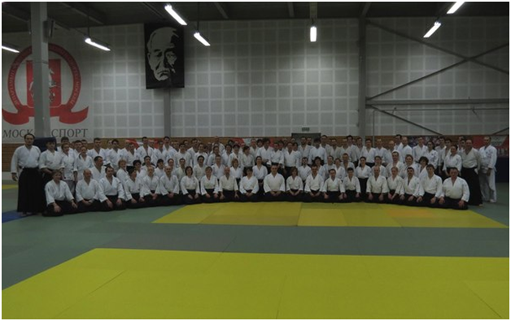
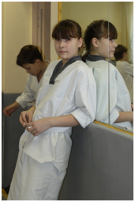
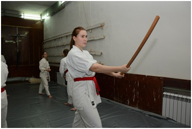
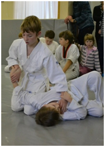
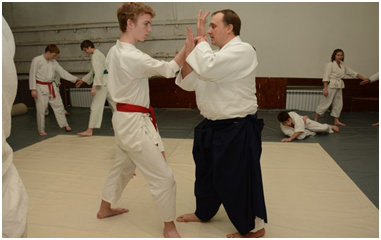
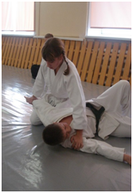
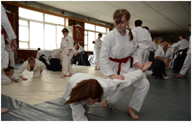

|
Весна 2015.
|
|
Первые полгода этого сезона прошли в федерации традиционно. Базовые
тренировки планово перетекали в Саратовские и международные семинары и экзамены.
|
|
Первый - это мартовский семинар Кристиана Тиссье в Москве, организованный
школой «Гакумон додзе». Нужно сказать, что приезд был юбилейным. Впервые в
Москву шихан приезжал 20 лет назад. Почти целая жизнь.
|
|
В семинаре приняли участие почти 250 человек. Много участников было из
других школ айкидо. Поэтому мастер уделял много времени стилевым особенностям
техники, обосновывая и объясняя свои приоритеты в работе. Стройная и внутренне
логичная система отношений внутри пары атакующий – защищающийся, свойственная
школе и позволяющая реалистично и относительно безтравматично практиковать,
тяжело давалась многим . Хотя пожалуй именно этот семинар был больше для
новичков и тех, кто занимается в других школах. Были и забавные моменты.
Особенно интересно выглядело, когда как раз представители других школ
пытаются объяснить ,что же показывает Кристиан.
|
|
Приятно было увидеть многочисленных представителей «Гакумон додзе» из
регионов России. « Семинар пролетел незаметно, было много интересного и
полезного, есть над чем задуматься и над чем поработать. Отличные были
выходные!» Пожалуй этой фразой можно коротко подвести итог этому
Московскому семинару.
|
|

|
|
Второй – традиционный апрельский аттестационный семинар М.Сафронова в
Саратове. Почти 50 человек смогли получить новые знания и навыки, а 30
подтвердили на экзамене возросший технический уровень.
|
|
|
|
Это был уже 2-й семинар, в котором приняли участие подросшие студенты из
детского отделения федерации. Они очень органично влились во взрослый коллектив.
А их экзамены отличались чистотой техники и уверенностью. Приятно наблюдать,
когда практически не заметный со стороны 4-х летний труд инструкторов детских
групп так ярко и фактурно проявляется в их учениках.
|
|

|

|
|

|

|
|

|

|
|
|
Третье – это экзамен детского отделения «федерации айкидо айкикай
Саратовской области». Он прошел 17 мая на базе с\к «ЭВЕРЕСТ». 31
воспитанник продемонстрировали результаты своей работы в течение этого
обучающего сезона. Хочется отметить, что бывшие старшие ученики отделения
в этой аттестации выступали уже и в качестве помощников в организации
экзамена и в финальных показательных выступлениях, которыми заканчивается
каждый детский экзамен.
|